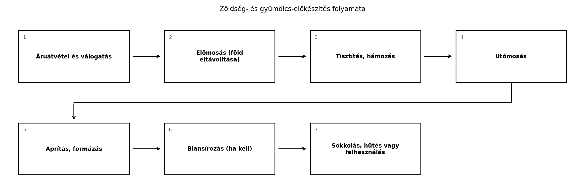

A reggeli előkészítő munka gyakran azzal indul, hogy a szakács megkapja a napi zöldség- és gyümölcsszállítmányt: zsák sárgarépa, rekesz paprika, láda alma, fejes saláta. A zöldségek és gyümölcsök többsége földdel, homokkal, esetleg sérült levelekkel vagy rothadó darabokkal érkezik. Ha ezeket megfelelő válogatás, mosás és tisztítás nélkül tesszük a vágódeszkára, a föld a készételbe kerül, a rossz darabok elrontják az ízt, a nem megfelelő aprítás pedig egyenetlen főzést okoz. A zöldség-előkészítés ezért nem csak „konyhai kényszer”: ettől függ az étel biztonsága, minősége, a tápanyagmegőrzés és a kalkulált anyagköltség is.
Képzeld el, hogy 10 kg sárgarépát és 10 kg burgonyát kell előkészíteni egy ebédmenühöz. A mérlegre teszed a nyers, földes zöldséget: ez a bruttó tömeg. Miután megmostad, meghámoztad, a gyökérvégeket levágtad, megint mérsz: a sárgarépából például 8,5 kg, a burgonyából 8,0 kg marad. A különbözet a tisztítási hulladék. A folyamat jól mutatja a zöldség-előkészítés lépéseit: válogatás, mosás, tisztítás, aprítás, felhasználás vagy hűtés.

Definíció. A válogatás az a művelet, amelynek során a nyersanyagból eltávolítjuk a sérült, romlott, penészes, földes vagy nem az ételbe való részeket. A zöldségeknél és gyümölcsöknél a válogatás kiterjed a méret, az érettség és a felhasználási cél szerinti szétválogatásra is.
Szabály. Először mindig válogassunk, és csak utána mossunk. Ha a sérült, rothadó darabok előbb a mosóvízbe kerülnek, a romlást okozó mikrobák a vízben szétterjedhetnek, és a többi darabot is szennyezhetik.
Mosás. A mosás célja a föld, homok, por, vegyszermaradvány, rovar és egyéb szennyezés eltávolítása. A zöldségeket és gyümölcsöket folyó, hideg vagy langyos ivóvíz alatt kell mosni. Az erősen földes gyökérzöldségeket kefével is áttisztítjuk. A leveles zöldségeket levélről levélre, folyóvíz alatt át kell nézni, mert a levélrésekben bújnak meg a csigák, homokszemek és rovarok.
Fontos. A mosáshoz nem használunk mosogatószert, szappant vagy fertőtlenítő háztartási szert. Csak ivóvízzel dolgozunk. Ha a zöldség erősen szennyezett, először rövid áztatással fellazíthatjuk a földet, de utána mindig folyóvízben öblítsük.
Áztatás. Az áztatást csak indokolt esetben alkalmazzuk. A gyökérzöldségek földjének fellazítására néhány perc elegendő. A salátaleveleket néhány percre hideg vízbe tehetjük, hogy a föld leülepedjen, de utána folyóvízben át kell mosni. A hosszú áztatás kerülendő, mert a vízben oldódó vitaminok és ásványi anyagok kioldódnak, a textúra pedig felpuhul.
Kritikus pont. A nyers zöldségek és gyümölcsök felületén talajeredetű baktériumok, például spórás baktériumok maradhatnak. A mosásnak el kell távolítania a látható földet. A mosott darabok már tiszta felülettel kerülhetnek a vágódeszkára, ezért a műveletet úgy kell megszervezni, hogy nyers hústól, tojástól vagy azok levétől elkülönítve történjen. A mosogatót és a vágódeszkát a használat előtt és után tisztítani, fertőtleníteni kell. A hűtendő, már tisztított zöldséget a HACCP-tervben megadott hőmérsékletre kell lehűteni, jellemző tanulási érték: 0–5 °C (ellenőrizendő: saját HACCP-terv / NÉBIH-útmutató). A hőmérsékletet a hűtőben mérni és dokumentálni kell.
Tilos. A zöldség- és gyümölcs-előkészítést ne végezzük abban a mosogatóban vagy azon a vágódeszkán, ahol nyers baromfit, húst vagy halat kezelnek. A nyers hús leve ugyanis keresztszennyezheti a készítendő salátát.
Definíció. A tisztítás a válogatott és megmosott nyersanyag azon részeinek eltávolítása, amelyeket nem fogyasztunk: héj, gyökérvég, mag, csuma, torzsa, külső levél, szárrész. A tisztítás után a zöldséget a felhasználásnak megfelelő, tiszta, ehető formára alakítjuk.
Szakosított előkészítő. Nagyobb konyhákban a zöldség-előkészítést külön munkaállomáson, az úgynevezett zöldség-előkészítőben (legumerie) végzik. Kisebb konyhán is legalább időben és térben el kell választani a nyers húsok és a zöldségek előkészítését. A zöldség-előkészítő pultja rozsdamentes, könnyen tisztítható legyen; a mosogató külön medencével szolgáljon, és ne legyen közvetlenül a hús-előkészítő mellett.
Tisztítási műveletek zöldségfélék szerint: - Gyökérzöldségek (sárgarépa, petrezselyemgyökér, zeller, cékla): mosás, kefe, hámozás, a zöld szárvég és a vékony gyökércsúcs levágása. - Burgonya, gumós zöldségek: alapos mosás, majd szem, hiba, zöld rész eltávolítása; a csírás burgonyát nem szabad felhasználni, mert a csírában mérgező szolanin halmozódhat fel (ellenőrizendő: pontos határérték, a zöld részek eltávolítása ajánlott). - Káposztafélék: külső levelek eltávolítása, torzsa kivágása, a sérült részek levágása. - Leveles zöldségek: fonnyadt, sérült levelek kiszedése, a torzsa kivágása, több váltású, folyóvizes levélmosás. - Paprika, paradicsom: mosás, a kocsány eltávolítása; paprikánál a csuma és a magok kiszedése, paradicsomnál a zöld rész kivágása. - Gyümölcsök: mosás, héj, mag vagy csuma eltávolítása a felhasználás szerint; az almát, körtét csumázzuk, a gyümölcshúst egyenletes darabokra vágjuk.
Definíció. Az aprítás a tisztított zöldség vagy gyümölcs felvágása meghatározott méretű és formájú darabokra. Az egyenletes aprítás azért fontos, mert így minden darab közel azonos idő alatt puhul meg, és az étel esztétikusan tálalható.
Főbb vágásformák:
| Megnevezés | Jellemző méret / forma | Tipikus felhasználás |
|---|---|---|
| Szelet, karika | 2–5 mm vastag korong vagy lap | saláta, köret, levesbetét |
| Gyufaszál (julienne) | kb. 2 × 2 × 40 mm-es hasáb | saláta, sült zöldség, levesbetét |
| Finom kocka (brunoise) | kb. 2 × 2 × 2 mm | levesbetét, mártás, töltelék |
| Kis kocka (macédoine) | kb. 5 × 5 × 5 mm | köret, saláta, ragú |
| Darabolt (mirepoix) | durvább, vegyes darabok | alaplé, leves, sült húsok alapja |
| Vékony csík (chiffonade) | levélzöldség vékonyra szelve | saláta, díszítés |
| Hasáb (pommes frites) | kb. 10 × 10 × 60 mm | sült burgonya |
Példa. A julienne vágásnál először a zöldséget 2 mm-es lapokra vágjuk, azután a lapokat 2 mm-es csíkokra, majd a csíkokat 40 mm-es darabokra. A fenti méretek tanulási értékek, a konkrét étel receptje szerint módosulhatnak.
Késhasználat. Mindig éles kést használjunk, mert az életlen kés csúszik és több balesetet okoz. A vágódeszka legyen stabil, nedves konyharuhával alá lehet fogatni. A vágás iránya a testtől elfelé mutasson. A reszelőnél és a mandolinnál mindig használjunk védőfogantyút vagy tolókart; a maradékot ne ujjal nyomjuk a pengére.
A mandolin pengéje ② nagyon éles, a vastagságot a vastagságállító ③ adja, julienne-hez a fésűs kést ④ tesszük be. A zöldséget a tolókar ⑥ tüskéibe szúrjuk, és a kezünk végig a fogantyún marad; a másik kézre az üzemi kockázatértékelés szerint vágásbiztos kesztyű kerül (MSZ EN 388 – ellenőrizendő). A maradékot soha ne told ujjal a penge felé – késsel vágd fel. A reszelőt nedves ruhára vagy csúszásgátlóra állítjuk, és a darab végét nem reszeljük le. A HTML-kiadásban a helyes és a hibás használat egymás után nézhető.
Definíció. A blansírozás (előfőzés) rövid ideig, forró vízben vagy gőzben végzett hőkezelés, amelyet gyors lehűtés, sokkolás követ. A zöldségeknél a blansírozás célja a szín rögzítése, a kellemetlen nyers íz tompítása, a héj könnyű eltávolítása, valamint a romlást okozó enzimek részleges lebontása.
Folyamat: 1. Forraljunk bő, enyhén sós vizet (a só nem kötelező; a zöldség színét a hő és a gyors hűtés védi). 2. Tegyük a zöldséget a forrásban lévő vízbe, és főzzük rövid ideig, zöldségtől és darabmérettől függően körülbelül 1–3 percig (ellenőrizendő: tankonyhai és üzemi előírás). 3. Szűrjük le, majd azonnal tegyük jéghideg vízbe vagy jégfürdőbe (sokkolás). Ez azért fontos, mert a belső hő tovább főzné a zöldséget, ami puhuláshoz és színvesztéshez vezet. 4. Csepegtessük le, majd használjuk fel, vagy hűtve tároljuk a HACCP-terv szerint.
Higiénia. A blansírozott zöldség hőkezelést kapott, ezért a nyers hústól, tojástól elkülönítve kell tartani. Ha nem azonnal használjuk fel, gyorsan le kell hűteni, és címkézve hűtőbe kell tenni. A lehűtés időtartamára és hőmérsékletére az üzemi HACCP-terv vonatkozik; jellemző tanulási érték: a főzés végétől 2 órán belül 20 °C alá, majd további 4 órán belül 5 °C alá (ellenőrizendő: NÉBIH-útmutató / hatályos rendelet / HACCP-terv).
A képsor számozása a fenti folyamat lépéseivel egyezik. A bő víz azért kell, hogy a beletett zöldség ne hűtse le, és hamar újra forrjon (1–2). A szűrőkanállal azonnal jeges vízbe tett zöldségben a belső hő nem főz tovább (3): az alsó sor mutatja, hogy a sokkolt bab élénk zöld és roppanós marad, a sokkolás nélkül hagyott utánfő, fakó és puha lesz. A lecsepegtetett zöldség fedve, címkézve kerül a hűtőbe (4). A HTML-kiadásban a négy lépés egyenként, nagyítva nézhető.
Összefüggés. Az alma, a körte, a banán, valamint a burgonya, az articsóka és néhány más zöldség felvágott felülete barnul, ha levegőn áll. A barnulást enzim okozza: a polifenol-oxidáz a sejtek sérülésekor oxigénnel és a növényi fenolvegyületekkel találkozva barna pigmentet hoz létre. Ez nem feltétlenül élelmiszer-biztonsági veszély, de rontja a minőséget, és a sérült felület kedvez a mikrobák szaporodásának.
Barnulásgátló módszerek: - Citromlé: a felvágott gyümölcsöt kevés citromlével vagy aszkorbinsavval (C-vitamin) összeforgatjuk; a sav és az antioxidáns lassítja a barnulást. - Savanyított víz: a burgonyát, almát, articsókát enyhén savanyított hideg vízbe (kevés citromlé vagy étkezési ecet – ellenőrizendő: töménység) tesszük, de nem sokáig, mert az áztatás tápanyagveszteséget okoz. - Fedés, hűtés: a vágott felületet letakarjuk, és a zöldséget hűtőbe tesszük; az alacsony hőmérséklet lassítja az enzimes barnulást. - Blansírozás: a hőkezelés lebontja a barnulást okozó enzimeket, ezért a blansírozott zöldség kevésbé barnul.
Figyelem. A barnulásgátló savas oldat nem helyettesíti a hűtést és a gyors felhasználást. A felvágott zöldség nem állhat órákig a meleg pulton.
A zöldségek és gyümölcsök vitaminjai, különösen a C-vitamin és a B-vitaminok, érzékenyek a hőre, a fényre, az oxigénre és a vízben oldódásra. Az előkészítés során így dolgozzunk:
Definíció. A tisztítási veszteség a nyers, bruttó tömeg és a tisztítás után kapott nettó tömeg közötti különbség. A hulladékszázalék megmutatja, hogy a bruttó tömeg hány százaléka hulladék.
Jelölések: - : bruttó tömeg (az egész, még tisztítatlan nyersanyag tömege) - : nettó tömeg (a tisztítás után, felhasználásra kész tömeg) - : hulladék tömeg (héj, mag, csuma, sérült rész) - : hulladékszázalék - : a nettó tömeg bruttó tömeghez viszonyított százaléka
Képletek:
Továbbvitt eredmény. A tisztítási veszteség és a hulladékszázalék fogalmát és képleteit használjuk a Tömegszámítás, veszteség és tömegnövekedés alfejezetben, valamint az Anyaghányad-számítás és receptúra-átszámítás alfejezetben. A bruttó–nettó–hulladék összefüggés kell ahhoz, hogy kiszámítsuk, mennyi nyers zöldséget rendeljünk egy adott nettó mennyiséghez. A salátáknál a Nyers saláták alfejezetben is visszatér.
Példa 1. A zöldség-előkészítőben 25 kg bruttó sárgarépát tisztítanak. A tisztítás után 20,5 kg nettó sárgarépa marad.
Adott: ,
Keresett: hulladék tömeg, hulladékszázalék, hozam.
Számítás:
Ellenőrzés: A nettó tömeg , tehát a számítás helyes. A hulladékszázalék 18 %, a hozam 82 %.
Példa 2. Egy menühöz 15 kg tisztított, kockázott burgonya szükséges. A burgonya tisztítási vesztesége 25 % a tanulási adat szerint (ellenőrizendő: üzemi anyaghányad-gyűjtemény). Mennyi bruttó burgonyát kell előkészíteni?
Adott: , , tehát .
Keresett:
Képlet:
Behelyettesítés:
Ellenőrzés: bruttó burgonyából nettó marad, tehát helyes.
Hiba. Gyakori tévedés, hogy a nettó tömeget egyszerűen megszorozzuk -val: . Ez kevés, mert a 25 % a bruttó tömegre vonatkozik: 18,75 kg-ból 25 % hulladék levonása után csak kb. 14,06 kg nettó maradna. Helyesen osztunk: . A HTML-kiadásban a kalkulátorral mindhárom irányt kipróbálhatod (bruttóból nettó, nettóból bruttó, mért tömegekből hulladékszázalék), és a nettóból bruttó módban a hibás szorzás eltérése is megjelenik.
Cél: 10 adag vegyes leveszöldség és salátazöldség tisztítása, aprítása és dokumentálása a tankonyhában.
Eszközök és anyagok: mérleg, rozsdamentes munkaasztal, külön zöldség-mosogató, folyó ivóvíz, konyhakés, hámozó, vágódeszka (zöldséghez elkülönítve), szűrő, jég vagy hideg víz, főzőedény, hűtő, kesztyű, tisztítószer és fertőtlenítőszer, jelölőcímke.
Biztonsági korlát. Ezt a gyakorlatot tankonyhán vagy oktatói felügyelettel végezd. A kést, hámozót, reszelőt és mandolint a tanult fogással használd; a vágódeszka ne csússzon. A forró vízzel végzett blansírozásnál a fedőt óvatosan emeld, és a szűrővel távolítsd el a zöldséget, hogy a gőz ne csapjon az arcodba. A vizes padlót azonnal töröld fel.
Higiéniai előkészület: 1. Tiszta munkaruhát, kötényt és csúszásmentes zárt cipőt vegyél fel. 2. Kézmosás folyékony szappannal, folyó meleg vízben. 3. A munkafelületet, a vágódeszkát és a késeket tisztítsd és fertőtlenítsd. 4. Győződj meg arról, hogy a területen nincs nyers hús vagy baromfi.
Számozott lépések: 1. Vedd át a zöldséget, és válogasd ki a sérült, penészes, rothadó darabokat. 2. Mérj legalább 1 kg sárgarépát, 1 kg petrezselyemgyökeret, 1 kg burgonyát, 2 fej salátát, 0,5 kg paprikát és 0,5 kg paradicsomot. Jegyezd fel a bruttó tömeget. 3. A gyökérzöldségeket és a burgonyát folyó hideg víz alatt kefével mosd meg. 4. A salátaleveleket bontsd, a sérült leveleket távolítsd el, majd levélről levélre mosd át folyóvízben. A paprikát és a paradicsomot öblítsd le. 5. A gyökérzöldségeket hámozd, a zöld szárat és a gyökércsúcsot vágd le. A burgonyán a hibás részeket, a zöld részt és a szemeket távolítsd el. A paprikából szedd ki a csumát és a magokat; a paradicsomból vágd ki a zöld részt. 6. Az előkészített zöldségeket öblítsd át hideg vízzel. 7. A sárgarépát és petrezselyemgyökeret vágd gyufaszálra (julienne), a burgonyát hasábokra, a salátát darabolt levelekre, a paprikát vékony csíkokra, a paradicsomot szeletekre. 8. Ha a zöldséget nem használod fel azonnal, tedd fedett edényben hűtőbe. Jegyezd fel a hűtő hőmérsékletét. 9. Mérj vissza minden tiszta, aprított tételt, és számítsd ki a hulladékszázalékot. 10. Takarítsd le a munkaállomást, mosogass és fertőtlenítsd az eszközöket, vidd le a hulladékot a konyhai hulladékkezelési szabályok szerint.
Ellenőrzési pontok: nincs föld, homok vagy rovar; a darabok egyenletesek; a szín élénk; a hűtő hőmérséklete a HACCP-terv szerinti; a mért nettó tömeg a várt tartományban van.
Dokumentálás: készíts előkészítési naplót. Rögzítsd a dátumot, a nyersanyag nevét, a bruttó és nettó tömeget, a hulladék tömegét, a hűtő hőmérsékletét, a dolgozó nevét és a megjegyzéseket.
Érzékszervi követelmények: - Szín: élénk, friss; vágott felület nem barnult; blansírozott zöldség esetén friss, intenzív szín. - Szag: tiszta, a nyersanyagra jellemző; nincs föld-, penész- vagy erjedésszag. - Állag: a nyers zöldség roppanós, feszes; a blansírozott zöldség harapható, de még roppanós; a gyümölcs nem kásás. - Forma: az aprítás egyenletes, a vágásforma megfelel a receptnek; nincsenek túl nagy vagy apró töredékek.
Mérhető követelmények: - Tömeg: a nettó tömeg az üzemi anyaghányad vagy a munkalap szerinti tűrésen belül van; a hulladékszázalék nem tér el jelentősen a tervezettől. - Hőmérséklet: a felhasználásig hűtött zöldség maghőmérséklete a HACCP-terv szerinti tartományban van (jellemző tanulási érték: 0–5 °C, ellenőrizendő).
Hiba: A zöldséget hámozzák, mielőtt megmosnák. Ok: a munkafolyamat rossz sorrendje. Helyes gyakorlat: előbb alapos mosás, azután hámozás, majd utómosás, hogy a héj szennyeződése ne kerüljön a húsba.
Hiba: A salátát hosszú időre vízben áztatják, ezért vitaminjai és ásványi anyagai kioldódnak, a levelek megpuhulnak. Ok: az áztatás és a mosás összekeverése. Helyes gyakorlat: rövid áztatás csak a föld fellazítására, utána folyóvizes levélmosás.
Hiba: A felvágott alma vagy burgonya megbarnul. Ok: enzimes barnulás, a vágott felület hosszú ideig levegőn áll. Helyes gyakorlat: citromlével vagy savanyított vízzel, illetve gyors felhasználással vagy hűtéssel lassítani a barnulást; blansírozással a burgonya színváltozása megelőzhető.
Hiba: A zöldséget ugyanazon a vágódeszkán aprítják, ahol előtte nyers csirke volt. Ok: a keresztszennyeződés szabályának figyelmen kívül hagyása. Helyes gyakorlat: elkülönített vágódeszka, kés és munkaterület a zöldség-előkészítéshez; alapos tisztítás után is ellenőrizzük a felületet.
Egy családi rendezvényre készülő konyhán a séf megkérte a tanulót, hogy készítsen elő salátát. A tanuló sietett, ezért a saláta leveleit csak egyszer öblítette le, majd a vágódeszkára tette. A deszkán előzőleg nyers csirkemellet szeleteltek, és a felületet csak egy vizes törléssel törölték le. A séf észrevette, a salátát félretette, és új mosást, fertőtlenítést rendelt el. Elmagyarázta a tanulónak, hogy a nyers csirke leve kórokozó baktériumokat tartalmazhat, amelyek a salátára kerülnek, és később a vendégeknél ételfertőzést okozhatnak. A séf a csapatnak újra bemutatta a keresztszennyeződés elkerülését, és a munkatervben rögzítette, hogy a zöldség-előkészítés mindig a nyers hús előkészítése előtt külön munkaállomáson történjen. A rendezvényen a saláta kifogástalan lett.
Tanulság: A zöldség-előkészítés nem csak technológiai lépés, hanem higiéniai választóvonal is. A föld lemosása, a külön deszka és a kézmosás nélkül a zöldség ugyanúgy ételfertőzés forrása lehet, mint a nyers hús.
1. feladat (A) Fogalmazd meg, mi a különbség a mosás és a tisztítás között, és miért kell a válogatást a mosás elé tenni?
2. feladat (A) Számold ki a hulladék tömegét és a hozamszázalékot: 30 kg bruttó burgonyából 22,5 kg nettó marad.
3. feladat (B) Rendezd helyes sorrendbe a következő műveleteket: hámozás, mosás, vágás, válogatás, utóöblítés. Indokold a sorrendet.
4. feladat (B) Egy leveshez 8 kg nettó tisztított, karikázott sárgarépára van szükség. A sárgarépa hulladékszázaléka 15 % a tanulási adat szerint. Mennyi bruttó sárgarépát kell beszerezni?
5. feladat (C) Egy büfére 15 kg vegyes, felvágott zöldséget kell előkészíteni. Tervezd meg a munkát: milyen sorrendben válogatnál, mosnál, tisztítanál és aprítanál, hová tennéd a felvágott árut, és mikor mérnél? Jelöld a legfontosabb HACCP-ellenőrzési pontot.
6. feladat (D) A gyakorlati munkalap szerint 1 kg sárgarépát, 1 kg burgonyát és 1 kg petrezselyemgyökeret készítesz elő. A mérés után a sárgarépa nettó tömege 0,85 kg, a burgonyáé 0,80 kg, a petrezselyemgyökéré 0,82 kg. Számold ki mindegyik hulladékszázalékát, és nevezz meg két minőségi ellenőrzési pontot, amelyet a mérésnél dokumentálni kell.
Hamis. Először mossuk a zöldséget, hogy a héjon lévő föld és szennyezés ne kerüljön a húsra, azután hámozunk, majd szükség szerint újra öblítünk.
Azért, hogy a belső hő ne főzze tovább a zöldséget; a gyors hűtés rögzíti a színt, a roppanós állagot és csökkenti a további vitaminveszteséget.
Hulladék tömeg: ; .
A nyers húsban vagy annak levében kórokozó baktériumok lehetnek; a zöldség gyakran hőkezelés nélkül vagy csak enyhén hőkezelve kerül fogyasztásra, ezért a keresztszennyeződés közvetlen ételfertőzést okozhat.
Citromlével vagy aszkorbinsavval megkenni, savanyított hideg vízbe tenni, letakarni, hűteni, vagy rövid blansírozást alkalmazni; a barnulást az enzimes oxidáció okozza.
A már mosott salátát nem szabad „csak úgy” tovább engedni; újra át kell mosni levélről levélre folyóvíz alatt, és ha a föld a levelek közé száradt, a sérült részeket el kell távolítani.
1. feladat (A)
A mosás a folyóvízzel való szennyezés-eltávolítás; a tisztítás a nem
ehető részek (héj, mag, csuma, gyökérvég) eltávolítása. Először
válogatni kell, hogy a romlott darabok ne szennyezzék a mosóvizet és a
többi nyersanyagot.
2. feladat (A)
Hulladék:
.
Hozam:
.
3. feladat (B)
Helyes sorrend: válogatás, mosás, hámozás, utóöblítés, vágás. Indoklás:
a válogatás megelőzi a mosást, hogy a romlott darab ne szennyezze a
vizet; a mosás a hámozás előtt kell, hogy a héj szennyeződése ne
kerüljön a zöldséghúsra; az utóöblítés a hámozás utáni maradékot
távolítja el; a vágás a tiszta nyersanyagon egyenletes darabokat
eredményez.
4. feladat (B)
,
,
tehát hozam
.
.
Ellenőrzés:
.
Tehát legalább 9,41 kg bruttó sárgarépát kell beszerezni.
5. feladat (C)
A munkaterv lépései: (1) áruátvétel és válogatás; (2) bruttó tömeg
mérése; (3) zöldségenként mosás a zöldség-mosogatóban; (4) tisztítás,
hámozás; (5) utóöblítés; (6) aprítás a recept szerint; (7) a felvágott
árut fedett edényben hűtőbe tenni, azonnali felhasználásig; (8) nettó
tömeg, hulladék és hűtőhőmérséklet dokumentálása. A legfontosabb
HACCP-ellenőrzési pont a mosás és az elkülönített munkaterület, valamint
a hűtött tárolás hőmérséklete.
6. feladat (D)
Sárgarépa: hulladék
;
.
Burgonya: hulladék
;
.
Petrezselyemgyökér: hulladék
;
.
Dokumentálandó pontok: a bruttó és nettó tömeg, a hulladék tömeg, a hűtő
hőmérséklete, a felhasználás ideje, és a dolgozó neve; továbbá az
érzékszervi ellenőrzés, hogy nincs föld, rothadás vagy sérült rész.
A zöldség- és gyümölcs-előkészítés sorrendje: válogatás, mosás, tisztítás, aprítás, felhasználás vagy hűtés. A válogatás megelőzi a mosást, hogy a romlott darabok ne szennyezzék a vizet. A mosás folyó ivóvízben történik; áztatni csak rövid ideig szabad, mert a hosszú áztatás vitamin- és ásványianyag-veszteséget okoz. A tisztítás során a nem ehető részeket távolítjuk el. Az aprítás formái: szelet/karika, gyufaszál (julienne), finom kocka (brunoise), nagyobb kocka (macédoine), durva darab (mirepoix), csík (chiffonade), hasáb. A blansírozás rövid forró vizes hőkezelés, majd gyors jéghideg hűtés; célja a szín és állag rögzítése. A barnulást citromlével, savanyított vízzel, hűtéssel vagy blansírozással lassíthatjuk. Továbbvitt eredmény: a tisztítási veszteség és a hulladékszázalék képlete: ; ; ; . Ezt használjuk a Tömegszámítás, veszteség és tömegnövekedés, az Anyaghányad-számítás, valamint a Nyers saláták alfejezetben. A zöldség-előkészítést nyers hústól elkülönítve, tiszta eszközökkel kell végezni, a hűtött tárolást pedig a HACCP-terv szerint kell dokumentálni.